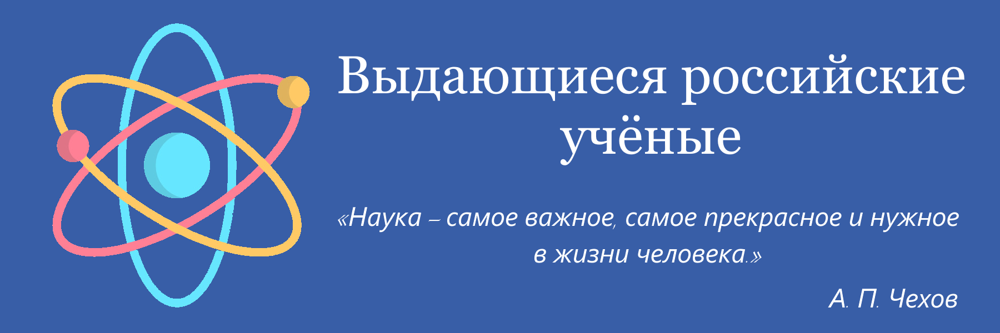
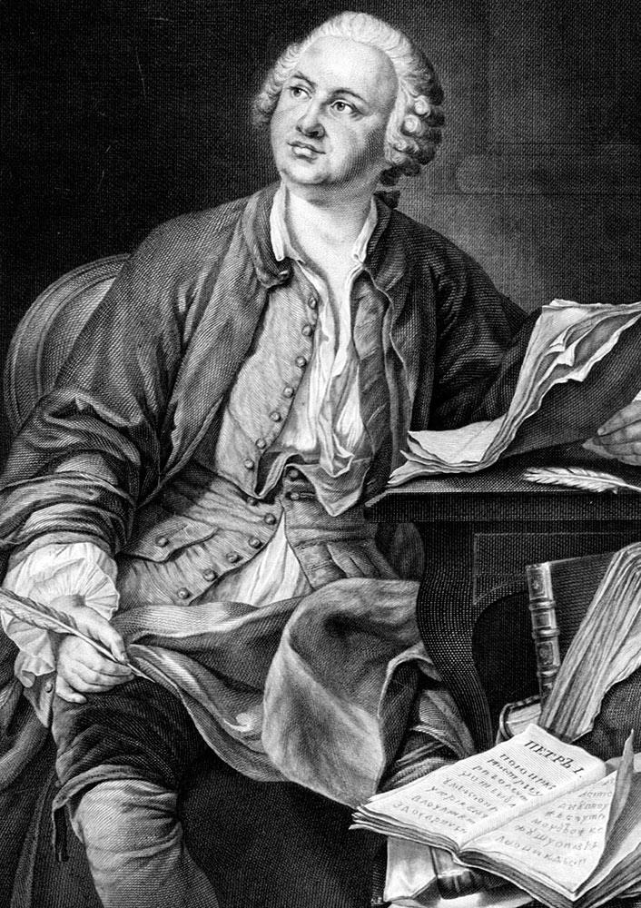

|  |
|---|
Михаил Васильевич Ломоносов(8 (19) ноября 1711, деревня Мишанинская, Архангелогородская губерния — 4 (15) апреля 1765, Санкт-Петербург)Первый крупный русский учёный-естествоиспытатель.Яркий пример «универсального человека» (лат. homo universalis): энциклопедист, физик и химик (он вошёл в науку как первый химик, который дал физической химии определение, весьма близкое к современному, и предначертал обширную программу физико-химических исследований; его молекулярно-кинетическая теория тепла во многом предвосхитила современное представление о строении материи и многие фундаментальные законы, в числе которых одно из начал термодинамики). Основоположник научного мореплавания и физической химии; заложил основы науки о стекле. Астроном (открыл наличие атмосферы у планеты Венеры), приборостроитель, географ, металлург, геолог. Он же поэт, художник, филолог, генеалог, историограф; поборник развития отечественных наук, экономики, образования (разработал проект Московского университета, впоследствии названного в его честь). Внёс также большой вклад в развитие риторики. Статский советник, профессор химии (1745), действительный член Санкт-Петербургской Императорской академии наук (1745) и почётный член Королевской Шведской и Болонской академий наук. |
Меню |
Изображение |
©2021 |
|---|